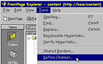
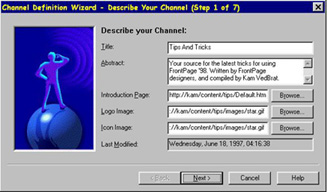
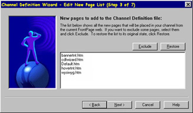
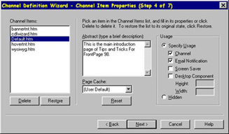
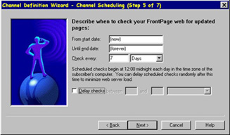

|
| ||
|
| ||
With the new FrontPage 98 Channel Definition Wizard, you can quickly turn your Web site into a "Channel" to which users may "subscribe" using either Internet Explorer 4.0 or Netcaster. Once users have subscribed, that Channel will automatically "push" (i.e., deliver) your Web content to any user desktop running a channel compatible browser.
To begin, open a Web in the FrontPage Explorer. From the Tools menu, select Define Channel to initiate the Channel Definition Wizard.

Click Next to create a new CDF file.
On the next screen, describe your Channel by giving it a special title or brief description. If you like, you may also choose a special introductory page, logo image, or icon image for your Channel. After you have entered your information, click Next to continue.

The Channel Definition Wizard will now look at your FrontPage Web to determine which folder contains the files to be used to create your Channel. The default folder of files that FrontPage will use to create your Channel is the root folder in your Web. If you want this to be the primary folder that FrontPage will use, click Next. If you want to include all subfolders, check that option before clicking Next. If you do not want the primary folder to be the root folder, click on Browse, and select a subfolder. Once you have selected the folder you want FrontPage to use for your Channel, click Next.
Now select the specific files from the folder that you want to include as part of your Channel. (The default setting will include all the files in the folder.) When you are satisfied with your list of files, click Next.

The files you chose above have become "items" in your Channel. You may now specify how each of these items will operate in your Channel. For example, you may decide to send subscribers an e-mail notification if any of the pages included in your Channel change, or you may choose to display changed pages on the subscriber's screen saver. To do this, select the page and specify the usage with the appropriate check box. Then click Next.

Internet Explorer or Netscape NetCaster on a subscriber's desktop will automatically check your FrontPage Web for the pages in your Channel that may have changed. You may define within the Channel Definition Wizard when and how often this Internet Explorer check occurs. Then click Next.

FrontPage may also track a user's navigation through your site and store that information in a log file. For now, leave Step 6 blank and click on Next.
On the final screen, the Channel Definition Wizard will ask for a location in your Web site where your Channel definition file will be saved. Give your file a name (a default name is also provided) and check the appropriate box if you would like FrontPage to add a subscribe button on the navigation bar of your Web's home page. Then click Save.
That's it! Any potential subscriber may now browse to your FrontPage Web, press the Subscribe button on your home page, and subscribe to your new Channel!
Did you find this material useful? Gripes? Compliments? Suggestions for other articles? Write us!
© 1999 Microsoft Corporation. All rights reserved. Terms of use.